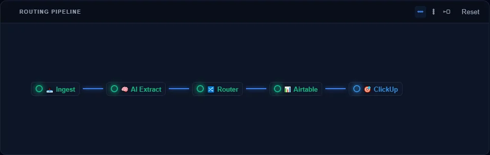

Interactive demoWorkflow automation
Omnichannel
Routing Engine
I built a dashboard that turns incoming messages into a routing workflow. Generate a sample email, choose two destinations, and inspect the receipt for each one.
Open live routing dashboardGenerate a fictional lead to explore the dashboard. Executing the pipeline can send it to configured services.